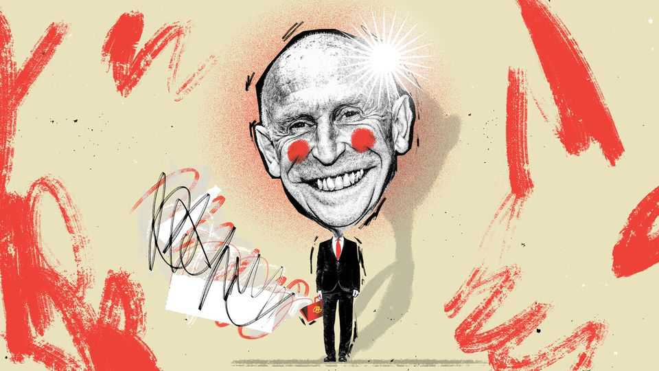

Meet John Healey, Britain’s bald fraud
As his upcoming budget will show, the chancellor is out of his depth

Oct 22nd 2026
Bald men ruled football in 2024. That year four of the big six managers in the Premier League had heads that gleamed like the trophies they won. A moniker was coined that is now beloved by football fans: the “bald fraud”. This charlatan is someone whose actions have little to do with their team’s performance on the pitch and who will, eventually and inevitably, be found out.
Bald dominance of football has since ended; the bald era of Britain’s public finances, however, is just beginning. In July John Healey, the new-ish chancellor and proud slaphead, greeted Treasury officials by noting familiar faces from his previous stint there in the 2000s. “Perhaps a little older, a little wiser, a little greyer,” he said. “Me, I’m still bald.” But what if Mr Healey is something worse? What if he is a bald fraud?
While accusations of bald fraudulence in football are made publicly, in Westminster they are private. “Pedestrian”, say the kinder ones who have worked with Mr Healey. “Slow”, say the meaner ones. Visibly out of his depth, remarks a veteran of Sir Keir Starmer’s era. Ministers do not pay Mr Healey much heed. What is the chancellor’s theory of growth? Who knows, replies one. Should they bother to find out? The chancellor has little influence on growth policy, shrugs a member of the cabinet. The caucus crying “bald fraud” is large.
Bald he may be but a fraud he is not, say others. “He’s got views!” says one mp, delightedly. After two frustrating years in power, Labour sets the bar low. Under Sir Keir, ministers treated their boss like a constitutional monarch, sitting mute while others ran the country for him. By contrast Mr Healey and Andy Burnham, Sir Keir’s successor, have politics. It is a parochial politics, focused on regional growth and hand-outs rather than the coming demise of the welfare state, but it is a politics nonetheless.
Gauging fraudulence is more art than science, in both football and politics. Some labelled bald frauds are nothing of the sort; others are lucky to be there at all. Often people decide based on trivia and vibes. Did you know Mr Healey came second among Labour mps when they voted for their shadow cabinet in 2010? The man has been around. He was first elected in 1997, becoming a Treasury minister when Gordon Brown was chancellor. Come 2024, this was executive manna to a party about to seize power with almost no governing experience. Mr Healey found himself as defence secretary, in the same way Sir Alex Ferguson’s former players were granted plum jobs even if they had achieved little. “Get Healey in. He knows the club.”
Pretty much everyone in top-flight football has won something, just as a senior politician has usually done a big job somewhere. How difficult is it to win the Eredivisie, the Dutch premier league, really? Some roles can make anyone look good. Is secretary of defence a real job? After all, the bulk of it comes down to asking the Treasury for money and then, if it refuses, sending uniformed generals to march up Downing Street and beg.
What being defence secretary does provide is instant gravitas. Sometimes appearance is all it takes. In 30 Rock, a sitcom about a television channel, one character ranted: “The television audience doesn’t want your elitist, east coast, alternative, intellectual, left-wing—” The recipient cut in: “Jack, just say Jewish, this is taking forever.” And so it was when Labour was casting around for a potential caretaker prime minister should Sir Keir have to quit. Mr Healey was tipped for it by senior party wallahs: steady, solid, looked the part. Just say “bald”, this is taking forever.
Asking for money and not getting it is Mr Healey’s main achievement in politics. His defining moment as defence secretary came when he left, resigning over Sir Keir’s refusal to raise defence spending to 3% by 2030. Mr Healey, hitherto known for resolute loyalty, called for the prime minister to go. It worked. Sir Keir left and Mr Healey landed the second-biggest job in government.
In football as in politics, frauds are exposed only once they climb high enough. The Peter principle—that everyone is promoted one level beyond their competence—is an iron law. After all, Mr Healey became chancellor because of who he was not. Shabana Mahmood was too useful as home secretary; Ed Miliband, now the foreign secretary, was too alternative, intellectual and left-wing. Mr Healey resembles a hapless coach at a club whose megalomaniac chairman picks the team each week.
Even a bald fraud can prosper for a while. Some budgets mark sea changes; the one on October 28th will not, unless something goes badly wrong. Some money for defence will be found and lip service will be paid to growth. Should it go without a hitch, plaudits will come in anyway: “steady”, “solid”, “he looked the part”.
But in 2027 Mr Healey will have to cobble together the best part of £35bn ($47bn, or 1.1% of GDP) if he wishes to avoid steep cuts for a swathe of departments including for local government and prisons, according to the Institute for Fiscal Studies, a think-tank. Anyone can manage a spending review when the economy is growing by 3% a year, in the same way any bald fraud can manage Bayern Munich, Germany’s richest club, and win the Bundesliga. Could they do it on a cold, wet night in Stoke? Can Mr Healey do it in a spring statement in April?
If a football team can thrive with a bald fraud at the helm, so can the British economy. The data are more hopeful than the vibes suggest; should the Strait of Hormuz fully reopen, they would be glowing. Whether Labour can hang on to power will be decided outside the chancellor’s office—in 10 Downing Street or far beyond. Should it fail, the next government will face the same fundamental questions. Andrew Griffith, another bald man, is the Conservatives’ new shadow chancellor. The debate can start again. ■